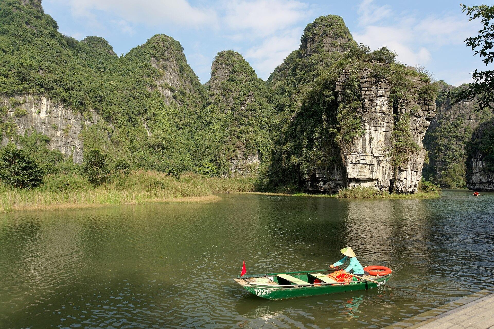

Ta strona układa trasę w przeglądarce i potrzebuje JavaScriptu. Jeśli widzisz ten tekst w podglądzie pliku na iPhonie, otwórz w przeglądarce stronę https://grzegorzfrskiba-hub.github.io/wietnam/ albo zapisz na niej swoją trasę jako PDF.
